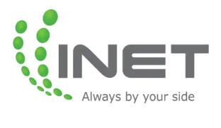

ขับเคลื่อน HR ด้วย CEO Cockpit และ AI Insight
HRS SOLIK ONE คือ HR Intelligence Platform ที่ออกแบบประสบการณ์เหมือนคอนโซลรถยนต์ระดับผู้บริหาร เห็นสถานะองค์กรแบบ Real-time พร้อมระบบ HR, Payroll, Recruitment, Skill Matrix และ AI Insight ในที่เดียว
CEO DASHBOARD
Strategic HR Intelligence
ปัญหา HR แบบเดิม คือผู้บริหารมองไม่เห็น Dashboard ขององค์กร
ข้อมูลกระจัดกระจาย รายงานช้า และไม่มีสัญญาณเตือนก่อนเกิดปัญหา
ข้อมูลกระจัดกระจาย
ข้อมูลพนักงาน การลา OT และ Payroll อยู่คนละไฟล์ ทำให้ตรวจสอบยาก
ตัดสินใจช้า
CEO ต้องรอ HR สรุปรายงานก่อนเห็นสถานะองค์กรจริง
ไม่เห็น Risk ล่วงหน้า
ปัญหา Attendance, OT, Skill Gap มักถูกพบเมื่อกระทบงานแล้ว
เปลี่ยน HR เป็นระบบควบคุมองค์กรแบบ Console
ออกแบบให้ผู้บริหารเห็นภาพรวมเหมือนหน้าปัดรถยนต์ ทั้งความเร็ว ทิศทาง ความเสี่ยง และ Action ที่ควรทำ
HR Operation
Employees, Attendance, Leave, OT, Payroll และ Recruitment อยู่ในระบบเดียว
CEO Cockpit
Dashboard สำหรับผู้บริหาร เห็น KPI Health, Risk, Department Status และ Insight
AI Insight
ช่วยวิเคราะห์ สรุป Executive Report และแนะนำ Steering Action
CEO Dashboard
มีให้ทุกแพ็กเกจ
ไม่ว่าลูกค้าจะเริ่มจาก START, GROW หรือ SCALE ผู้บริหารสามารถเห็นภาพรวมองค์กรผ่าน CEO Dashboard ได้ตั้งแต่วันแรก จุดนี้ทำให้ HRS SOLIK ONE ต่างจาก HR Software ทั่วไป
Module ครบเหมือนชุดควบคุมรถทั้งคัน
แต่ละโมดูลทำหน้าที่เป็น Sensor, Control, Dashboard และ Insight ให้ HR และผู้บริหาร
Dashboard & Strategy
Dashboard, CEO Dashboard, Strategy Config
Organization
Employees, Departments, Positions, Sites
Time & Attendance
Attendance, Attendance Dashboard, Work Calendars, Holiday Templates
Leave & OT
Leave Requests, Leave Approvals, OT Requests, OT Approvals
Training & Skill
Training Skills, Skill Matrix, Training Records
Recruitment & Payroll
Recruitment, Payroll, Reports
AI Credits
เครดิตสำหรับ Generate Executive Insight
Admin Setting
User Roles, Approval Mapping, Change Password
Executive Insight ไม่ใช่แค่ AI Summary
CEO Dashboard Insight 1 ครั้งใช้ 3 AI Token เพื่อสร้างรายงานผู้บริหาร ช่วยสรุปสถานะองค์กร ชี้ Risk วิเคราะห์แนวโน้ม และแนะนำ Action ที่ควรทำต่อ
แพ็กเกจราคาแบบ Console Package
ยิ่งอัปเกรด ราคาต่อคนต่อเดือนยิ่งคุ้ม และได้ระบบควบคุมองค์กรครบขึ้น

Package & Module Comparison
ตารางเปรียบเทียบ Module ทั้งหมดในแต่ละแพ็กเกจ พร้อมแสดงความคุ้มของ SCALE
| หมวด | Module | START | GROW | SCALE |
|---|---|---|---|---|
| แดชบอร์ดและภาพรวม | ||||
| Dashboard | มี | มี | มี | |
| CEO Dashboard | มี | มี | มี | |
| Strategy Config | มี | มี | มี | |
| การจัดการข้อมูลองค์กร | ||||
| Employees | มี | มี | มี | |
| Departments | มี | มี | มี | |
| Positions | มี | มี | มี | |
| Sites | มี | มี | มี | |
| ระบบลงเวลาและวันหยุด | ||||
| Attendance | มี | มี | มี | |
| Attendance Dashboard | มี | มี | มี | |
| Work Calendars | มี | มี | มี | |
| Holiday Templates | มี | มี | มี | |
| ระบบการลาและล่วงเวลา | ||||
| Leave Requests | มี | มี | มี | |
| Leave Approvals | มี | มี | มี | |
| OT Requests | มี | มี | มี | |
| OT Approvals | มี | มี | มี | |
| การฝึกอบรมและทักษะ | ||||
| Training Skills | มี | มี | มี | |
| Skill Matrix | มี | มี | มี | |
| Training Records | มี | มี | มี | |
| การสรรหาและเงินเดือน | ||||
| Recruitment | – | มี | มี | |
| Payroll | มี | มี | มี | |
| Reports | พื้นฐาน | มาตรฐาน | เต็มรูปแบบ | |
| ระบบสนับสนุนและตั้งค่า | ||||
| AI Credits | 1,500 | 3,000 | 4,000 | |
| User Roles | มี | มี | มี | |
| Approval Mapping | มี | มี | มี | |
| Change Password | มี | มี | มี | |
Business Value ที่ช่วยให้ได้ผลลัพธ์จริง
ไม่ใช่แค่ระบบ HR แต่คือเครื่องมือช่วยขับเคลื่อนองค์กรให้ถึงเป้าหมาย
ลดงาน Manual
ลด Excel และงานเอกสารซ้ำซ้อน
อนุมัติเร็วขึ้น
Leave / OT / Approval Mapping ลดคอขวด
เห็น Risk เร็วขึ้น
Dashboard และ AI Insight แจ้งสัญญาณก่อนเกิดผลกระทบ
บริหารเชิงกลยุทธ์
เชื่อม HR Data กับ Strategy, Skill และ Performance
Implementation Roadmap
เริ่มใช้งานเป็นขั้นตอน คล้ายการ Tune ระบบก่อนออกวิ่งจริง
Kickoff
กำหนดเป้าหมายและ Scope
Setup
ตั้งค่าองค์กรและข้อมูลหลัก
Role
กำหนดสิทธิ์และ Approval
Import
นำเข้าข้อมูลพนักงาน
Training
อบรม HR, Admin, Manager
Go Live
เริ่มใช้งานจริงพร้อม Support
FAQ
ตอบคำถามสำคัญก่อนลูกค้าขอดู Demo
ทุกแพ็กเกจมี CEO Dashboard ใช่ไหม?
ใช่ ทุกแพ็กเกจมี CEO Dashboard เพื่อให้ผู้บริหารเห็นภาพรวมองค์กรตั้งแต่เริ่มใช้งาน
คิดราคาตาม User หรือพนักงาน?
แนะนำคิดตาม Active Employee หรือจำนวนพนักงานที่ถูกบริหารในระบบ ไม่ใช่เฉพาะคนที่ Login
AI Token คืออะไร?
AI Token คือเครดิตสำหรับสร้าง AI Insight เช่น CEO Dashboard Insight โดย 1 ครั้งใช้ 3 Tokens
ถ้าพนักงานเกินแพ็กคิดอย่างไร?
คิดเพิ่มตามจำนวนพนักงานส่วนเกิน โดย START 250 บาท, GROW 200 บาท และ SCALE 150 บาทต่อคนต่อเดือน
สามารถอัปเกรดแพ็กเกจภายหลังได้ไหม?
สามารถอัปเกรดได้ตามการเติบโตขององค์กร เช่น จาก START ไป GROW หรือ SCALE
ระบบแสดงเมนูตามสิทธิ์ได้ไหม?
ได้ ระบบเป็น Role-based เช่น Employee, HR, Admin, Manager และ CEO จะเห็นเมนูต่างกันตามสิทธิ์
VOICE OF CUSTOMERS
ตัวอย่างมุมมองจากผู้ใช้งานแต่ละบทบาท เพื่อช่วยให้ลูกค้าเห็นคุณค่าของ HRS SOLIK ONE ในการใช้งานจริง
ผู้บริหาร / CEO
Executive View“จากเดิมต้องรอรายงานจาก HR หลายวัน ตอนนี้ผมเห็นภาพรวมคนทั้งองค์กรผ่าน CEO Dashboard ได้ทันที ทั้ง KPI Health, ความเสี่ยง และประเด็นที่ต้องตัดสินใจ”
HR Manager
HR Operation“ระบบช่วยลดงาน Excel และงานตรวจสอบซ้ำ ๆ ได้เยอะมาก ข้อมูลพนักงาน การลา OT และรายงานอยู่ในที่เดียว ทำให้ทีม HR ทำงานเป็นระบบมากขึ้น”
หัวหน้าแผนก
Approval Workflow“การอนุมัติลาและ OT ชัดเจนขึ้น เห็นสถานะทีมได้ง่าย ไม่ต้องไล่ถาม HR หรือค้นข้อความย้อนหลังใน Line เหมือนเดิม”
ทีมบริหาร
AI Insight“AI Insight ช่วยสรุปประเด็นสำคัญจาก Dashboard ให้เข้าใจเร็วขึ้น พร้อมแนะนำ Action ที่ควรทำต่อ ทำให้การประชุมมีข้อมูลประกอบการตัดสินใจมากขึ้น”
Our Partners
พื้นที่สำหรับแสดงรายชื่อลูกค้า พาร์ทเนอร์ และองค์กรที่ไว้วางใจ HRS SOLIK ONE เพื่อเพิ่มความน่าเชื่อถือก่อนลูกค้าตัดสินใจขอดู Demo
